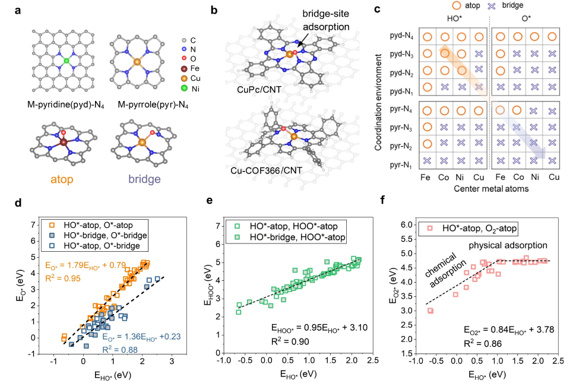
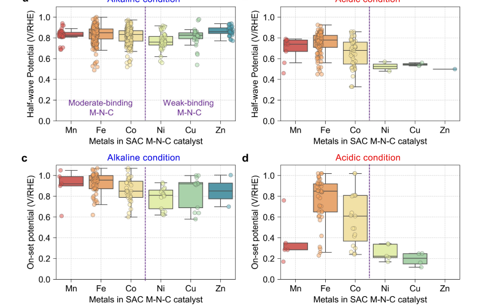
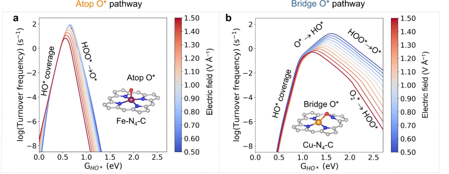
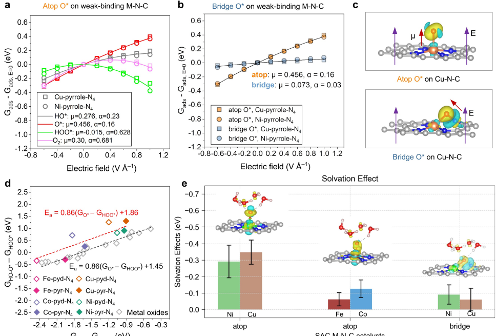
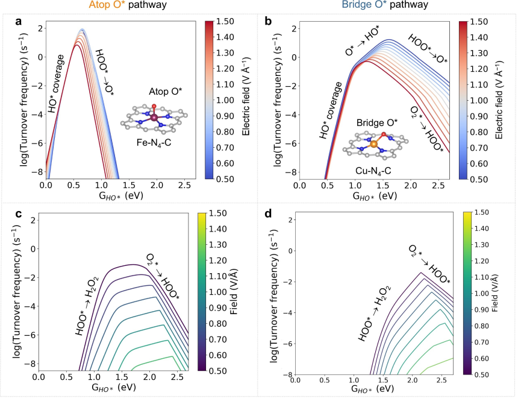
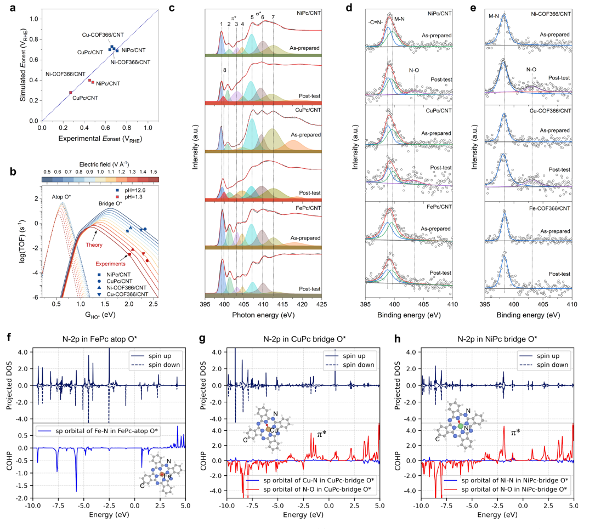
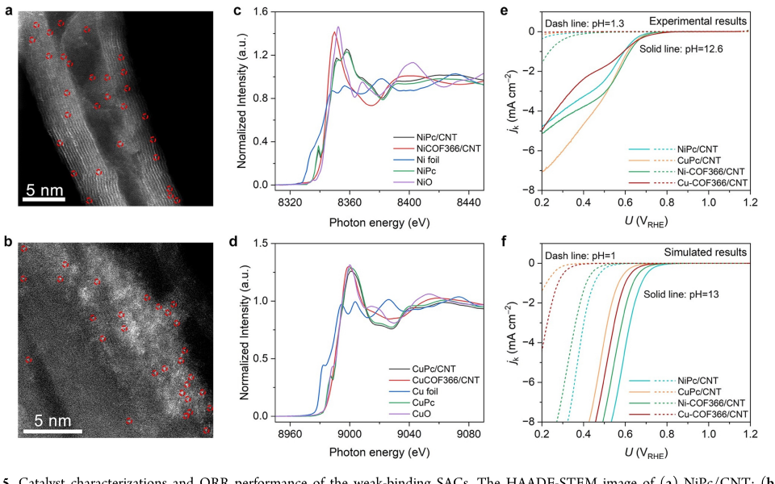

Zhang et al., JACS 2025
Why Do Weak-Binding M–N–C Single-Atom Catalysts Possess Anomalously High Oxygen Reduction Activity?
Ni/Cu 계열 ORR anomaly를 adsorption strength 문제가 아니라 O* geometry 문제로 다시 읽는다.






